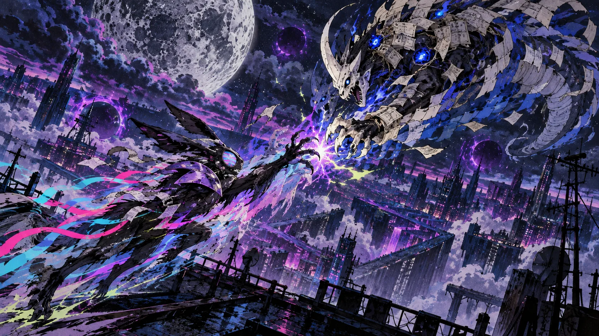
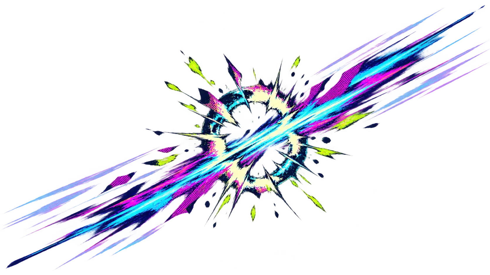

WHAT THEY ACTUALLY FIGHT ABOUT
One desk, two tenants. The hound makes things; the leviathan remembers them. When the lamp is switched off they meet on the same violet floor and take opposite sides of one question: what is worth keeping?
The hound answers with a new draft — something that did not exist an hour ago. The leviathan answers with the version of it that already happened, footnoted. Neither of them wins. Both of them get sharper.
Three creatures watch from the shelf above the desk and keep score in a language that is mostly tail. The moon above the window is a door; what is behind the door is what the two halves are really arguing about, and neither of them will say it out loud.
Nothing on this page is a link. Doors belong to the room; the arena only keeps consequences.
HOUSE RULES
- A move has to be finished before the other half may answer.
- The half that speaks first loses the point — unless the other is still loading.
- Nothing is deleted. It is only moved somewhere darker.
- The duel never ends; it is paused when the lamp goes off.
- The lamp is on. Neither half has moved yet.

